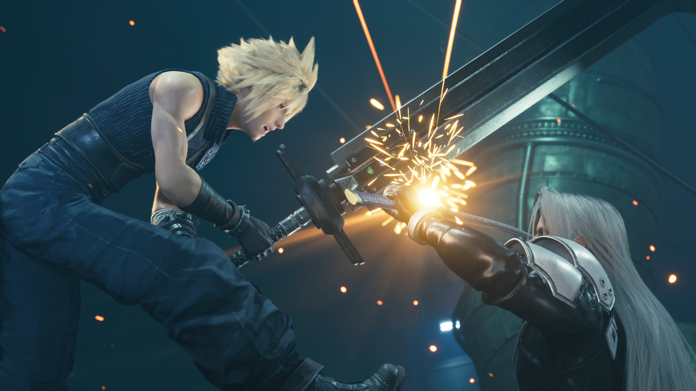

Yo!🤜
I'm Anthony 👨🦰
Frontend Web & Filemaker Developer
Married to my teenage crush, Charlene, and together since
2006!🧡 We have two daughters and a son🚸, and of course a
fur-child too!🐶
Software Dev Grad since 2020 from Code Institute, and the Slack
community there is second to none! Currenetly working in the HSE
as a web & filemaker Dev. One of my biggest passions is
building Community.
Without the ⭕CI⭕ community, I wouldn't of made it as far as I
have in my career. From on-demand problem solving, to making
some of the best friends I've ever met. 👏
Meet some of the Community by clicking below!
👉Community = Product👈
🎮Fuse!🏋️♂️
Gaming! Something about it, from the creativeness of
each game, to the musical score, and not to mention
the Story elements too. I would be lying if it hasn't
moulded me enough over the years. From gaming as a
child, to now in my adult life.😅 My online persona
is named Auxfuse (or Fuse). That's a story for another
time.⚡
I've only recently finished the Final Fantasy 7 Remake,
and I was like an excited child hearing the Prelude in it
for the first time. And then got chills hearing One-Winged Angel!
And the visuals...just look at this screenshot I took
of Cloud & Sephiroth ⚔. Hidden behind a collapsable element
to save anyone from Spoilers, 🙈, you've been warned.
Final Fantasy 7 Screenshot

To counteract all the stationary moments in my day-to-day
lifestyle from Work to Gaming, I'm an avid Olympic Weightlifter.
No...no, I have not gone to the Olympics rather the sport is
called Olympic Weightlifting.🏋️♀️ And I get to train
alongside my Wife, Charlene. One of the biggest primary
drivers in my life.🧡
The mental health gains and the physical prowess improvements,
have made my stationary life that much more sustainable. Lifting
weights doesn't just make you stronger or leaner, it allows your
mind to decompress, your psyche to re-stabilise, and brings focus.
No spoiler tags this time, just me and a barbell.